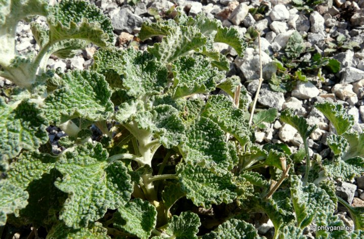

| PHRYGANA | Fauna | Flora |
additions nouveautés |
espèces species |
contact -
info - commentaires phrygana1 (at) gmail.com |
| Particularités crétoises | Galles et mines |
| Marrubium vulgare L. |
| 302 | Flora | LAMIACEAE | Marrubium L. |
|
 Marrubium vulgare Louros 01 janvier 2012 |
| fr: le Marrube blanc de: Andorn en: White Horehound | |
| Plante vert blanchâtre, poilue | |
| Feuilles: ovales-arrondies, ridées, légèrement cordées, crénélées, pétiolées, laineuses (surtout la face inférieure), à limbe épais, à nervures en réseau | |
| Tige robuste | |
| Inflorescence: en verticilles axillaires étagés, des glomérules denses munis de bractées crochues | |
| Fleurs: corolle blanchâtre à 2 lèvres (12 - 15 mm); 4 étamines fertiles incluses dans le tube de la corolle; anthères à 2 thèques; calice à 10 dents subégales et crochues à leur extrémité | |
| Fruits: carpelles lisses | |
| Hauteur: 20 - 60 cm | Type biologique: hémicryptophyte ramifié |
| Floraison: février mars avril mai juin juillet août septembre | |
| Altitudes: 0 - 600 m | |
| Statut en Crète: indigène | |
| Biotopes en Crète: fermes, abords des habitations, terrains vagues, bords de route, terrains caillouteux, décombres | |
| Distribution: Europe, région Méditerranéenne, Asie tempérée, devenant subcosmopolite (naturalisée en Amérique du Nord) | |
| Espèce héliophile et nitrophile (souvent près des bergeries) | |
| Espèce mellifère et médicinale. | |
| 03 janvier 2012 |
| © paul fontaine -- © Phrygana.eu 2007 -- 2013 |